The dense Songs table
A full-width, sortable track table with multi-select, inline star ratings, in-place cell editing and customizable columns. The dense default view you land in.
* Well, almost. Not actually iTunes, not affiliated with Apple, rebuilt from scratch and cherry-picked to taste.
Manage, rate, search and play your local collection.
The iTunes workflow,
cherry-picked across its golden years and shaped to taste.
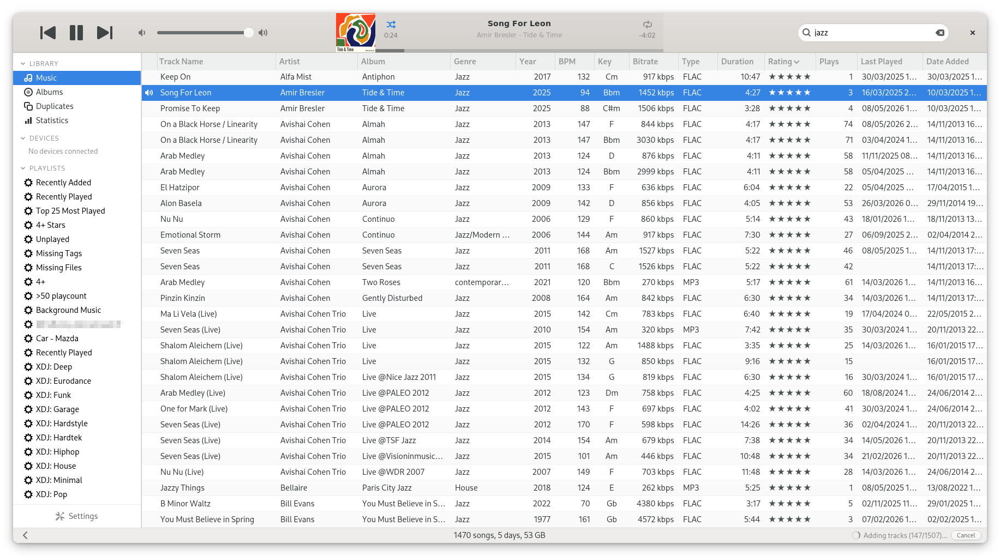
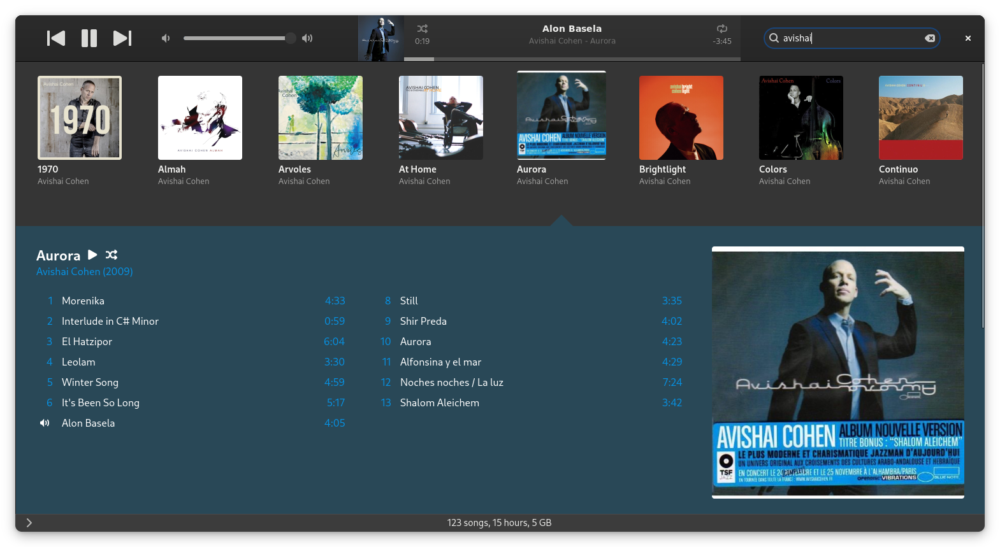
Everything the good old library workflow had, and a few things it never did.
A full-width, sortable track table with multi-select, inline star ratings, in-place cell editing and customizable columns. The dense default view you land in.
The cover-art wall iTunes was loved for: a full-width grid of album covers, grouped by album. Click a cover to play that album on its own.
Index your folder in place and never move a file, or let Sustain keep it tidied by artist and album.
Merge duplicate copies of a track into one keeper, with the best of each field preselected (highest-quality audio, available artwork, present tags over blanks, the earliest release date and every choice overridable).
Insert a CD, encode it to your library in MP3 or lossless FLAC. Artwork and track names are pulled automatically. Multiple error correction levels are available.
Ordinary playlists, iTunes-style rule-based smart playlists, and folders to nest them. Queue tracks on the fly with Play Next and Add to Queue.
5-star ratings, play counts, skip counts, last-played and last-skipped, kept in your own library, fed to the smart-playlist engine.
Real-time filtering across the whole library, with sortable, reorderable, resizable columns. Built to stay fast well past 10,000 tracks.
The shortcuts you're used to are preserved. Ctrl+F jumps to search, Ctrl+I opens Get Info, Space plays and pauses, and the rest show up in the GNOME shortcuts overlay. Your media keys work too.
Sustain can analyze each track to estimate its tempo and musical key, then exposes both to tempo- and harmony-aware smart-playlist rules, computed locally.
Decades of gems curation can leave gaps. Optional background retrieval backfills missing artwork, ID3 tags and lyrics from MusicBrainz, Cover Art Archive, AcoustID and LRClib (only the gaps, only if you ask).
A third shuffle mode tries to keep you in the mood by matching the next track to the one playing. It uses all available attributes and audio analysis when enabled.
Driving a young-timer with an SD-card or USB head unit? Sync playlists to a stick, a card, or an Android phone over MTP, just like you used to sync an iPod, incrementally, only what changed. A deduplicated .m3u8 tree, or one folder per playlist.
Writes a real Pioneer Rekordbox database to thumbdrives (BPM, key, beat grids, waveforms, cover-art) so CDJ/XDJ hardware reads it natively. To our knowledge, the only Linux app that does this.
Respects your system light/dark mode and accent color out of the box. No bespoke theme picker fighting your desktop.
Rust, GTK4 and GStreamer (no Electron, no web wrapper, no half-gigabyte of Chromium). Designed and tested for 10,000-track libraries: instant search, smooth scrolling, and a cold start in 100ms.
A few of these may happen if enough people actually want them.
Podcasts are just RSS feeds, and iTunes' podcast view was genuinely nice, so this could come later.
It's technically feasible and depends on a need for it.
The DRM and intellectual-property side is a minefield. Open-source tooling already talks to these devices, so it could technically arrive.
This could come for open, documented protocols like DLNA/UPnP (AirPlay is Apple-proprietary).
It's a self-contained feature but would require careful research to match what existed.
On Linux that belongs further down the audio chain: PipeWire with EasyEffects.
Sustain is a music app. Stuffing videos in iTunes was likely an iDevices related move. It makes no sense if Sustain doesn't support iDevices
Your music is precious, and it should stay under your control, not vanish from your shelf because two executives in a glass tower fell out over a licensing deal.
At this point, burning CD is probably best classified as a kink.
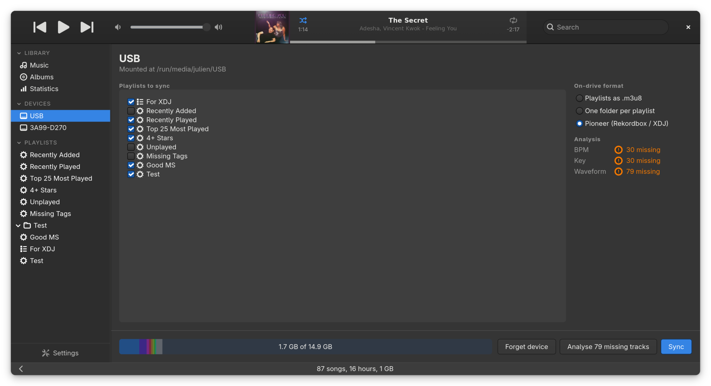
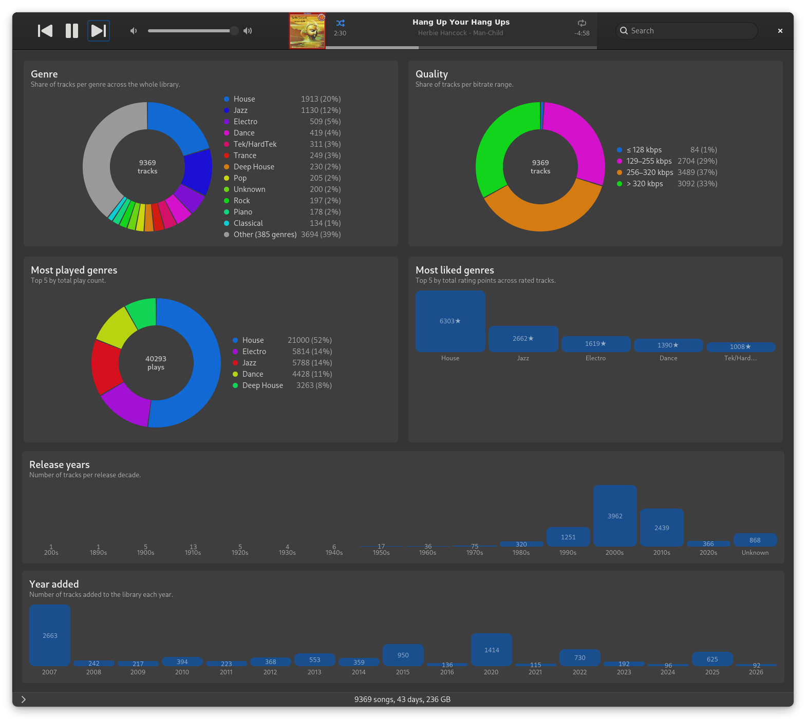
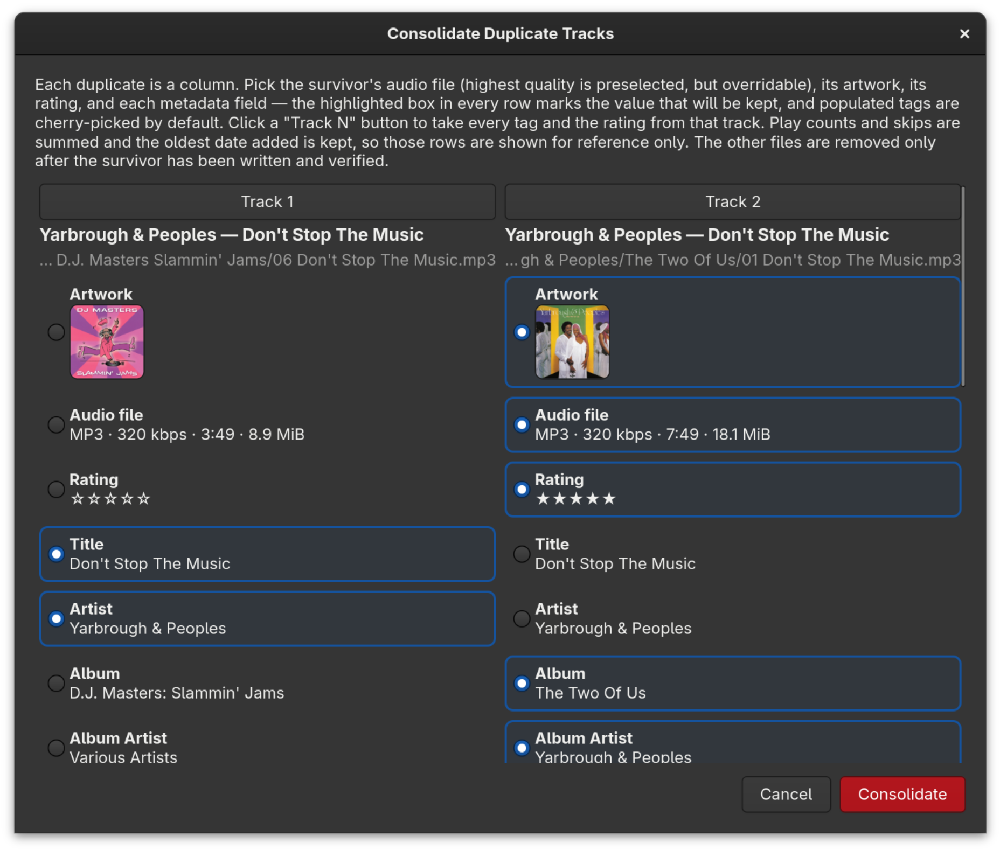
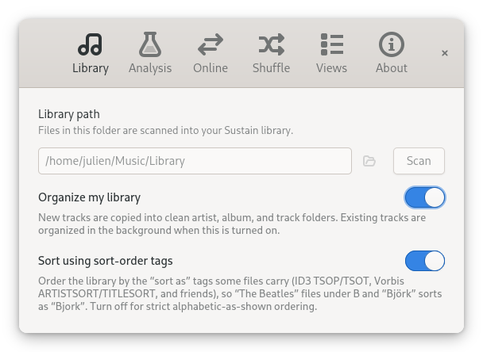
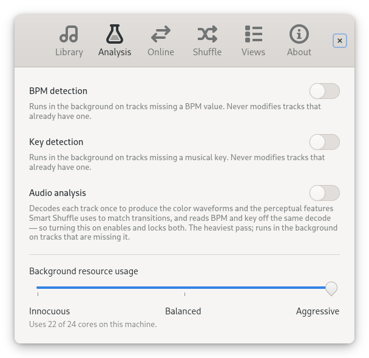
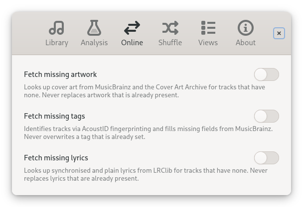
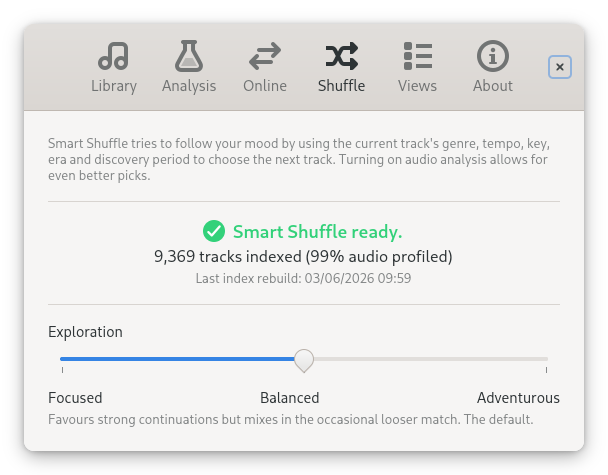
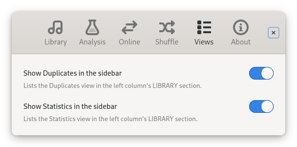
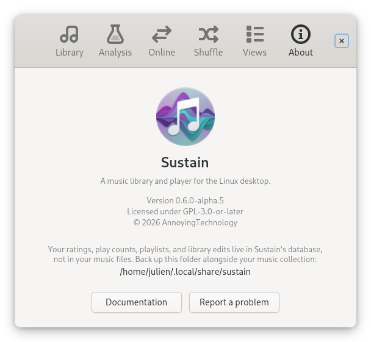
Trying to bolt iTunes onto Linux with Wine, or hunting for something that finally feels right? Point Sustain at your music folder and your collection is indexed in place. It doesn't auto-import playlists, ratings or play history, but the guides below double as a spec you can hand to an LLM to convert your iTunes export and bring the rest across.
Pre-built artefacts are attached to every GitHub release. Sustain needs GTK 4.18: install the native package on a recent enough system, or the Flatpak everywhere else (it bundles its own GTK, so your system version doesn't matter).
The .deb is built against Debian trixie's GTK 4.18 and installs cleanly on Debian testing (trixie) and Ubuntu 25.10+. Distributions still on older GTK (Linux Mint, elementary OS) can't run the native package yet; use the Flatpak below.
sudo apt install ./sustain_<version>_<arch>.debThe Flatpak runs on the org.gnome.Platform//48 runtime and brings its own GTK 4 / GStreamer stack, so it works regardless of how old your system's GTK is.
flatpak install --user ./sustain.flatpak
flatpak run io.github.open_sustain.sustainA Flathub submission is not possible due to their "no AI code and no AI documentation" policy.